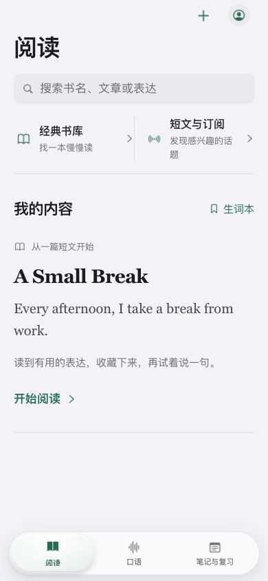
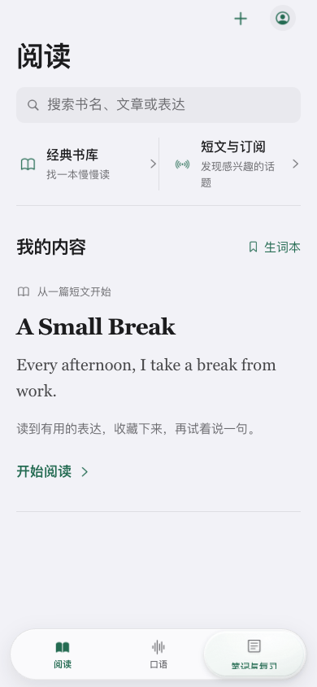
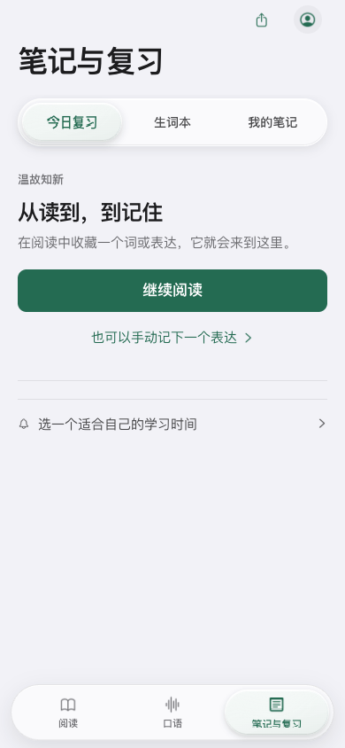
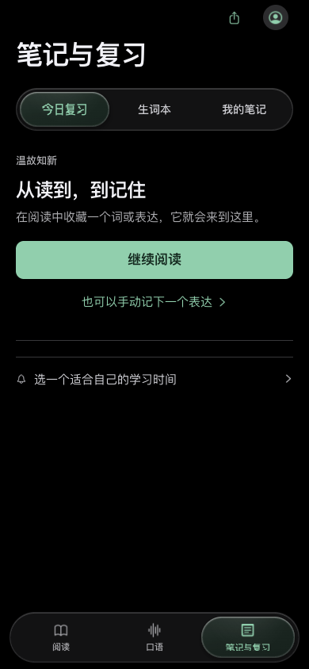
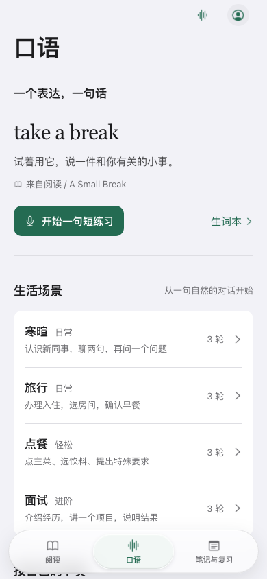

passed · optical plane mounts and preserves all original button hit targets
passed · trusted pointer long press wakes the lens without committing a tab
passed · continuous multi-slot pointer drag commits exactly once on release and reuses filter nodes/textures
passed · settled navigation releases its RAF and stays asleep
passed · capture loss cancels a drag without committing
passed · vertical intent cancels navigation without accidental activation
passed · keyboard focus, Enter and Space activation remain intact
passed · trusted browser touchscreen tap selects the underlying button
passed · trusted CDP touch supports long press, continuous drag, release-only commit and touchcancel
passed · light/dark layouts fit 320/390/430/768px with 44px minimum touch targets
passed · reduced motion preserves dragging while removing optical motion and spring deformation
passed · increased contrast removes optical replay and backdrop blur
passed · reduced transparency switches to a solid readable surface
passed · SDF filter changes visible pixels with independent refraction and RGB dispersion evidence
RAF delivery: median 16.70 ms, p95 16.70 ms, max 66.80 ms (59 intervals). This includes automated input and screenshot work; it is not a GPU or physical-device frame-rate measurement.

chromium-nav-held.png

chromium-nav-drag-before-release.png

chromium-light-390.png

chromium-dark-390.png

chromium-reduced-motion.png
Optical fixture
The filtered and unfiltered images share the same source. Refraction and RGB dispersion are tested independently; the zero-strength case checks source-coordinate and glyph-coverage fidelity.
passed · optical plane mounts and preserves all original button hit targets
passed · trusted pointer long press wakes the lens without committing a tab
passed · continuous multi-slot pointer drag commits exactly once on release and reuses filter nodes/textures
passed · settled navigation releases its RAF and stays asleep
passed · capture loss cancels a drag without committing
passed · vertical intent cancels navigation without accidental activation
passed · keyboard focus, Enter and Space activation remain intact
passed · trusted browser touchscreen tap selects the underlying button
not available · continuous trusted touch drag
Playwright WebKit exposes trusted taps but no public touch-move API; trusted pointer drag is tested. No synthetic stream is counted as physical touch.
passed · light/dark layouts fit 320/390/430/768px with 44px minimum touch targets
passed · reduced motion preserves dragging while removing optical motion and spring deformation
passed · increased contrast removes optical replay and backdrop blur
not available · reduced transparency media emulation
No public Playwright WebKit emulation for this preference; native contrast media fallback is tested.
passed · SDF filter changes visible pixels with independent refraction and RGB dispersion evidence
RAF delivery: median 14.00 ms, p95 15.00 ms, max 19.00 ms (63 intervals). This includes automated input and screenshot work; it is not a GPU or physical-device frame-rate measurement.
The filtered and unfiltered images share the same source. Refraction and RGB dispersion are tested independently; the zero-strength case checks source-coordinate and glyph-coverage fidelity.